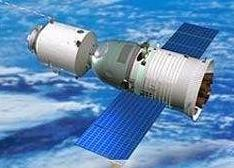

神舟八号飞船于2011年11月1日5时58分在酒泉卫星发射中心新型长征二号F遥八火箭发射。天宫一号与神舟八号的成功交会对接标志着我国空间交会对接技术取得重大突破，实现了我国空间技术的重大跨越，是我国载人航天事业发展历程中的重要里程碑。
神舟八号飞船首次交会对接为无人自动交会对接试验，对接目标飞行器为天宫一号，追踪飞行器为神舟八号飞船。神舟八号飞船为改进型载人飞船，沿用返回舱、推进舱和轨道舱三舱结构，全长9米，舱段最大直径2.8米，起飞质量为8082千克。增加了微波雷达、激光雷达、CCD敏感器等交会测量设备，以及主动式对接机构，具备自动和手动交会对接与分离功能。对接机构采用导向板内翻式的异体同构周边式构型，对接后可形成0.8米的航天员转移通道。
神舟八号飞船返回的主着陆场位于内蒙古自治区苏尼特右旗以西阿木古朗草原。
交会对接飞行过程分为远距离导引段、自主控制段、对接段、组合体飞行段和分离撤离段。远距离导引段自神舟八号飞船入轨后开始，在地面测控通信系统的导引下，神舟八号飞船经五次变轨，从初始轨道转移到330千米的近圆轨道，在距天宫一号目标飞行器后下方约52千米处，与天宫一号目标飞行器建立稳定的空空通信链路，开始自主导航。
自主控制段经历寻的、接近和平移靠拢三个阶段，神舟八号飞船通过交会对接测量设备，自主导航至与天宫一号目标飞行器接触，自主控制飞行过程约144分钟。对接段从对接机构接触开始，在15分钟之内完成捕获、缓冲、拉近和锁紧四个过程，最终实现两飞行器刚性连接，形成组合体。
